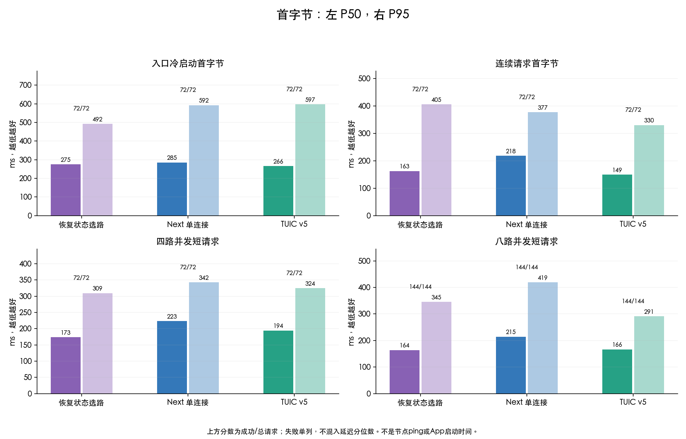
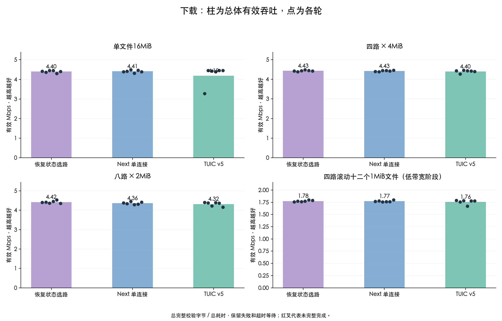
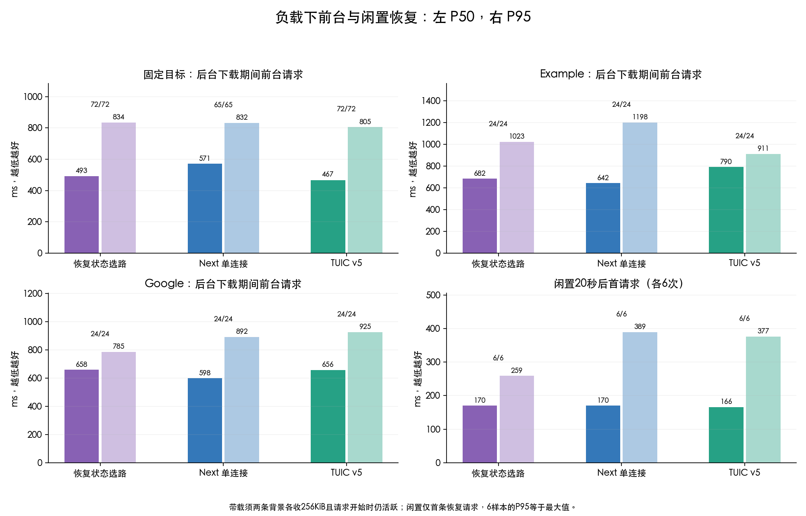
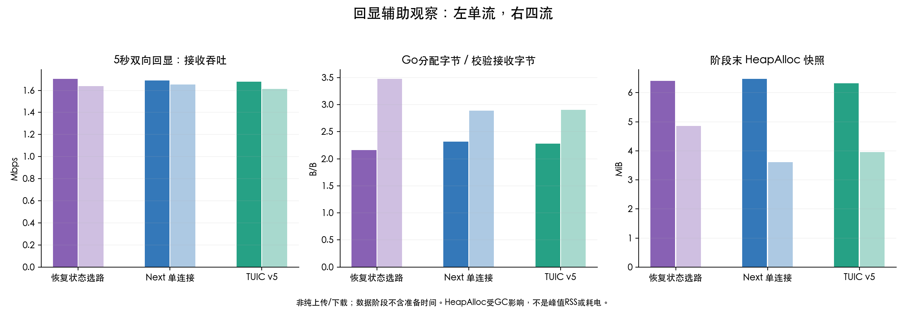
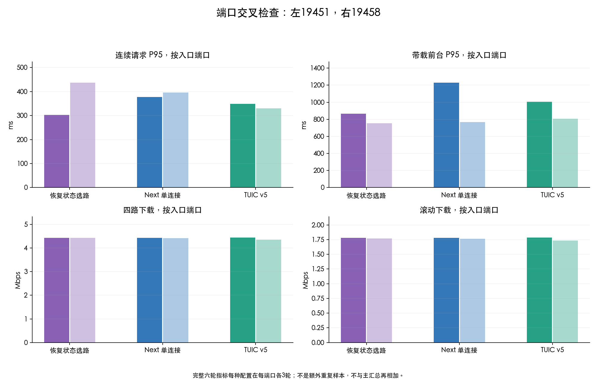

2026-11-23 · VPS 154.37.155.240 · HONOR TFY-AN00 / Android12 · 同一Wi-Fi、同一公网VPS · 安卓原生核心独立程序。正式App VPN临时关闭，未替换正式App。
未复现恢复状态选路在所有场景上的明显优势。早期冷启动P95以恢复选路较低，连续和八路短请求P95以TUIC较低；单文件及成批下载多数接近共同带宽上限。低带宽滚动三组也接近，严格带载P95差距较小。
原大滚动存在超时与不完整文件，且已经被直连对照证实同期普通HTTPS也较慢；不能将这些失败直接解读为协议固有缺陷。当前证据不足以仅凭这台服务器选择最终默认调度。实验是安卓原生核心，不是正式App/TUN、耗电或隐蔽性验收。
| 配置 | 客户端 | 服务端 | 保持/关闭 |
|---|---|---|---|
| 恢复状态选路 | Next自适应双通道 + RecoveryAware | 冻结Next独立原型 | BBR；预算/首段副本/确认合并关闭 |
| Next单连接 | 单物理连接池，恢复选路关闭 | 与上一行相同服务端 | BBR；相同QUIC基础配置 |
| TUIC v5 | Mihomo原生TUIC池，未额外双开 | 本轮从CatNode构建V2Core，含dispatcher/limiter | 双方显式BBR；0RTT与FastOpen关闭；合成用户不限速/设备数 |
三组使用同一证书与SNI，外层为QUIC/TLS1.3，密码实现与默认握手未另调。BBR名称相同不代表依赖实现和窗口参数完全一致。Next是独立实验服务器，TUIC是CatNode核心，差异包含实现和调度开销，不是单独线格式或加密算法的极限评比，也不是严格等连接数实验。
固定目标为VPS上的HTTPS服务；所有目标证书校验开启。首字节、单文件及成批下载来自前期约4.4Mbps阶段，滚动小任务、带载、回显、闲置与真实网站来自后期约1.8Mbps阶段。不同阶段不能用于单独归因协议调度效果。冷启动是每次新建客户端/入口连接，不是App启动，也没有声称清空系统DNS或所有TLS缓存。连续请求复用入口但每次新建目标TLS。文件组使用共享客户端，统计包含入口准备、目标TLS和完成校验耗时；回显吞吐则从准备完成后计时。首次并发可能包含副通道准备。
串行请求和单文件场景未必建立第二通道，因此即使恢复配置的数字不同，也不能全部归因于恢复选路。并发/带载更能体现其两条通道和新流选择。恢复信号直接来自本端已发包判丢与入口RTT，没有新增对端下行恢复反馈；既有业务不迁移、不重放。

| 场景 | 配置 | 成功/总数 | P50 ms | P95 ms | 最大 ms |
|---|---|---|---|---|---|
| 入口冷启动 | 恢复状态选路 | 72/72 | 274.69 | 492.29 | 825.27 |
| 入口冷启动 | Next 单连接 | 72/72 | 284.95 | 591.91 | 793.80 |
| 入口冷启动 | TUIC v5 | 72/72 | 265.92 | 596.55 | 714.22 |
| 连续请求 | 恢复状态选路 | 72/72 | 162.54 | 405.23 | 441.20 |
| 连续请求 | Next 单连接 | 72/72 | 218.11 | 376.53 | 484.16 |
| 连续请求 | TUIC v5 | 72/72 | 149.35 | 329.62 | 403.30 |
| 四路短请求 | 恢复状态选路 | 72/72 | 173.50 | 309.39 | 372.74 |
| 四路短请求 | Next 单连接 | 72/72 | 222.98 | 342.35 | 347.13 |
| 四路短请求 | TUIC v5 | 72/72 | 194.29 | 324.39 | 415.58 |
| 八路短请求 | 恢复状态选路 | 144/144 | 163.51 | 345.25 | 469.08 |
| 八路短请求 | Next 单连接 | 144/144 | 214.53 | 418.87 | 1335.90 |
| 八路短请求 | TUIC v5 | 144/144 | 166.47 | 290.92 | 483.76 |
| 本地目标带载 | 恢复状态选路 | 72/72 | 492.71 | 833.79 | 1027.41 |
| 本地目标带载 | Next 单连接 | 65/65 | 570.83 | 832.47 | 1347.31 |
| 本地目标带载 | TUIC v5 | 72/72 | 466.71 | 805.35 | 1012.26 |
| Example带载 | 恢复状态选路 | 24/24 | 682.22 | 1022.53 | 1214.70 |
| Example带载 | Next 单连接 | 24/24 | 641.91 | 1197.92 | 1265.44 |
| Example带载 | TUIC v5 | 24/24 | 789.84 | 910.94 | 1196.25 |
| Google带载 | 恢复状态选路 | 24/24 | 657.64 | 785.40 | 854.52 |
| Google带载 | Next 单连接 | 24/24 | 598.18 | 891.57 | 1201.83 |
| Google带载 | TUIC v5 | 24/24 | 655.62 | 924.70 | 1134.72 |
| 闲置20秒后首条 | 恢复状态选路 | 6/6 | 170.47 | 258.94 | 258.94 |
| 闲置20秒后首条 | Next 单连接 | 6/6 | 170.12 | 389.49 | 389.49 |
| 闲置20秒后首条 | TUIC v5 | 6/6 | 165.53 | 376.70 | 376.70 |
P50表示半数成功请求不超过该值；P95表示95%成功请求不超过该值，失败另列。首字节含入口/目标TLS/HTTP，不是ping。入口Dial返回可能早于成功状态被读取，不用旧entry/target_tls列直接判断根因，各阶段分位数不可相加。

| 场景 | 配置 | 轮数 | 文件完成 | 总体有效 Mbps | 逐轮中位 Mbps | 最慢轮 Mbps | 最快轮 Mbps |
|---|---|---|---|---|---|---|---|
| 单文件16MiB | 恢复状态选路 | 6 | 6/6 | 4.40 | 4.41 | 4.30 | 4.45 |
| 单文件16MiB | Next 单连接 | 6 | 6/6 | 4.41 | 4.40 | 4.31 | 4.49 |
| 单文件16MiB | TUIC v5 | 6 | 6/6 | 4.19 | 4.44 | 3.28 | 4.46 |
| 四路 × 4MiB | 恢复状态选路 | 6 | 24/24 | 4.43 | 4.43 | 4.38 | 4.48 |
| 四路 × 4MiB | Next 单连接 | 6 | 24/24 | 4.43 | 4.43 | 4.39 | 4.46 |
| 四路 × 4MiB | TUIC v5 | 6 | 24/24 | 4.40 | 4.43 | 4.27 | 4.46 |
| 八路 × 2MiB | 恢复状态选路 | 6 | 48/48 | 4.42 | 4.41 | 4.36 | 4.53 |
| 八路 × 2MiB | Next 单连接 | 6 | 48/48 | 4.36 | 4.36 | 4.29 | 4.45 |
| 八路 × 2MiB | TUIC v5 | 6 | 48/48 | 4.32 | 4.37 | 4.16 | 4.40 |
| 四路滚动十二个1MiB文件（低带宽阶段） | 恢复状态选路 | 6 | 72/72 | 1.78 | 1.77 | 1.76 | 1.80 |
| 四路滚动十二个1MiB文件（低带宽阶段） | Next 单连接 | 6 | 72/72 | 1.77 | 1.77 | 1.76 | 1.80 |
| 四路滚动十二个1MiB文件（低带宽阶段） | TUIC v5 | 6 | 72/72 | 1.76 | 1.78 | 1.67 | 1.79 |
总体有效吞吐=完整校验字节总量/全部轮次总耗时。部分未完成文件不当成完整成果，失败/超时等待保留。TUIC原48MiB滚动第二、三轮触发180秒整组上限，未取得最终完成记录，整组待验证字节按零计；这不等于证明每个文件都未传输。编排停止并恢复VPN后，重新预检，从下一组续跑；没有重跑替换该超时组。不是峰值，也不是各轮速度的算术平均。不同指标或不同测试时段不合并成一个总分。

| 场景 | 配置 | 全部前台成功 | 严格带载样本数 | 背景下载完成 |
|---|---|---|---|---|
| mixed/mixed | 恢复状态选路 | 72/72 | 72 | 12/12 |
| mixed/mixed | Next 单连接 | 72/72 | 65 | 12/12 |
| mixed/mixed | TUIC v5 | 72/72 | 72 | 12/12 |
| web-example/mixed | 恢复状态选路 | 24/24 | 24 | 4/4 |
| web-example/mixed | Next 单连接 | 24/24 | 24 | 4/4 |
| web-example/mixed | TUIC v5 | 24/24 | 24 | 4/4 |
| web-google/mixed | 恢复状态选路 | 24/24 | 24 | 4/4 |
| web-google/mixed | Next 单连接 | 24/24 | 24 | 4/4 |
| web-google/mixed | TUIC v5 | 24/24 | 24 | 4/4 |
低带宽阶段带载条件为2×4MiB背景下载与12次前台HEAD共享客户端；后台两条下载各收到256KiB后再发前台，最多等待5秒；只有请求开始时两条均已就绪且背景仍活跃的样本进入带载分位数。远端组后台使用证书匹配的fc-lab.test:19454，前台独立访问Example/Google。没有关闭证书校验。闲置组只看20秒后的第一条请求，6样本P95等于最大值；它不是切网或断线重连测试。

| 配置 | 并发流 | 轮数 | 成功流 | 接收Mbps中位 | 分配B/接收B中位 | HeapAlloc MiB中位 |
|---|---|---|---|---|---|---|
| 恢复状态选路 | 1 | 6 | 6/6 | 1.70 | 2.16 | 6.40 |
| 恢复状态选路 | 4 | 6 | 24/24 | 1.64 | 3.47 | 4.86 |
| Next 单连接 | 1 | 6 | 6/6 | 1.69 | 2.31 | 6.47 |
| Next 单连接 | 4 | 6 | 24/24 | 1.65 | 2.89 | 3.61 |
| TUIC v5 | 1 | 6 | 6/6 | 1.68 | 2.28 | 6.33 |
| TUIC v5 | 4 | 6 | 24/24 | 1.61 | 2.90 | 3.95 |
每轮5秒同时发送并回显校验，准备时间另记。不是纯上传/下载；若有早退/错误，必须同时看成功数和原始errors。HeapAlloc是阶段末Go快照，受GC与吞吐影响，不是系统峰值内存或耗电，未做锁屏能耗判断。

每轮重启测试服务；Next/TUIC在19451与19458间交换，Next两个配置共用该轮Next入口。完整六轮指标每种配置每端口3轮，原大滚动除外，并平衡先后位置。两个端口仍可能受源端口、路由和时段影响；公网与生产其他流量未完全隔离。分端口结果是主样本的切片，不重复累计；见 分端口汇总。
早期多种下载均约4.4Mbps，原滚动第二轮起陆续超时或部分完成。暂停后独立直连HTTPS三次4MiB文件全部校验成功，速度分别为1.801, 1.760, 1.781 Mbps。观察到共同路径容量下降，不能仅凭此定位到运营商限速、服务器或Wi-Fi中的某一处。
| 原48MiB任务（只执行3轮） | 轮数 | 取得完整校验记录/计划文件 | 总体有效Mbps | 含失败耗时秒 |
|---|---|---|---|---|
| 恢复状态选路 | 3 | 30/36 | 3.049 | 330.1 |
| Next 单连接 | 3 | 22/36 | 1.883 | 392.1 |
| TUIC v5 | 3 | 12/36 | 0.893 | 450.8 |
TUIC第二、三轮均触发180秒整组时限，未取得最终完成记录，按0可验证成果保留；不表示已证明每个文件都没有传输。Next保留实际完成文件数和150秒等待。原任务后3轮未执行，不计成功也不计失败。以1.8Mbps估算，48MiB需约224秒，超过既定150秒，因此这些不完整结果无法用来认定某协议固有可靠性。
随后冻结独立低带宽计划：滚动12×1MiB/4路、带载背景2×4MiB，其余协议设置与二进制不变。每种配置各6轮并继续交换端口，不重跑替换原失败组，不与原大滚动混算。带载、回显、闲置和网站与前期首字节/大文件属于不同时段网络状态。
直连对照原始数据 · 低带宽独立计划 · 含中断、预检与续跑时间线
冻结计划与二进制SHA256 · 汇总JSON · 完整CSV · 逐轮下载 · 验证及清理 · 复现说明
三组使用相同临时测试证书和自建信任根，域名校验开启；不是公开CA部署验收。服务端临时hosts映射fc-lab.test至本机公网IP，防止TUIC目标嗅探后无法解析。两种端口分配都先通过三组功能预检，预检不计入排名。首次功能预检中TUIC因临时域名缺少服务端映射失败，修正后重新预检通过才开始主测；失败预检单独保留，没有丢弃主测样本。测试因TUIC滚动整组超时中断一次，补充编排超时记录与续跑机制，保留原始日志和失败组。前半段本地目标仅加载临时根证书，首字节第六轮前补入系统公共根证书供后续真实网站校验；临时根保持不变，协议二进制未改。手机VPN和唤醒设置在结束后恢复，此服务器原有服务仅SSH，未覆盖生产服务。仅本安卓Wi-Fi原生核心实验，不代替正式App、多网络、隐蔽性或长期稳定性验收。